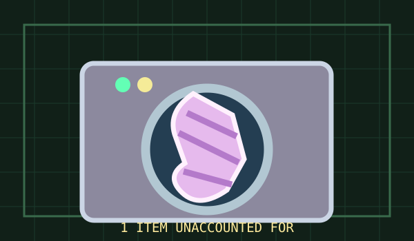

> CAT /BUREAU/CASES/SOCK.DOSSIER
THE MISSING SOCK DEPARTMENT_
Two socks entered. One returned. The inquiry is ongoing.
BEGIN CASE STUDY ↓
> INCIDENT.REPORT / INITIAL OBSERVATION
At 07:43 the washing machine was loaded with twelve pairs of socks. At 09:21 the Bureau counted twenty-three individual socks. Archivist Lilac opened a folder marked 'Probably Behind Something' and requested that no one panic.
EDITORIAL FICTION. NO REAL INVESTIGATION OR VISITOR DATA INVOLVED.
> EXHIBIT / 002-A
ROOM 01 / 04A DISAPPEARANCE IN THE SPIN CYCLE
The Bureau's most expensive display contains one surviving striped sock and an unsettling amount of empty space.
Several explanations are immediately available: the sock could be hiding inside a duvet cover, caught behind the machine, trapped in another garment, or simply never entered the wash.
The missing sock is a lovely miniature example of a problem that invites one confident explanation before the evidence has been gathered.
ARCHIVIST'S NOTE / THE ABSENCE OF A SOCK IS NOT EVIDENCE OF A SOCK DIMENSION.
> EXPERIMENT / 002-B
ROOM 02 / 04SOCKS WITH PERSONAL PASSPORTS
Professor Pebble's latest invention attaches a microscopic passport to every sock and establishes immigration checkpoints between the washer and the dryer.
Initial experiments produce detailed travel records. They also add seventeen minutes of paperwork to a routine wash, and the passport on sock B-14 disappears under mysterious circumstances.
The Bureau recommends filing the paperwork by fabric composition, color and level of existential concern.
EXPERIMENT STATUS / ADMINISTRATIVELY IMPRESSIVE, DOMESTICALLY UNHELPFUL.
> ATLAS / 002-C
ROOM 03 / 04THE TRIANGLE OF UNPAIRED THINGS
Here lie missing socks, unmatched food-container lids, charging cables last seen 'somewhere on the desk,' and the pen that went missing while you were holding it.
The shared territory is not supernatural. It is the messy boundary between storing, moving, sorting and remembering ordinary objects.
Archivist Lilac proposes mapping those steps before commissioning a portal investigation.
NEARBY LOCATION / THE DRAWER OF CABLES WITH FORGOTTEN PURPOSES.
> REFLECTION / 002-D
ROOM 04 / 04WE REMEMBER WHAT BREAKS THE PATTERN
The missing sock stands out because it interrupts a tidy expectation: one pair goes in, one pair comes out. Most of what works escapes our attention.
Sometimes a good investigation begins by accepting uncertainty and listing possible explanations. A Fishbone diagram can help us avoid becoming attached to the first attractive story.
One sock is a small inconvenience. The habit of separating evidence from speculation is a genuinely useful skill.
A MYSTERY DOES NOT BECOME TRUER BECAUSE ITS EXPLANATION IS FUNNIER.
> END_OF_FILE / LESSON_ARCHIVED
CASE CLOSED. MORE OR LESS_
Inspired to think more clearly? Read the original field guide on Fishbone.
READ FISHBONE FIELD GUIDE ↗